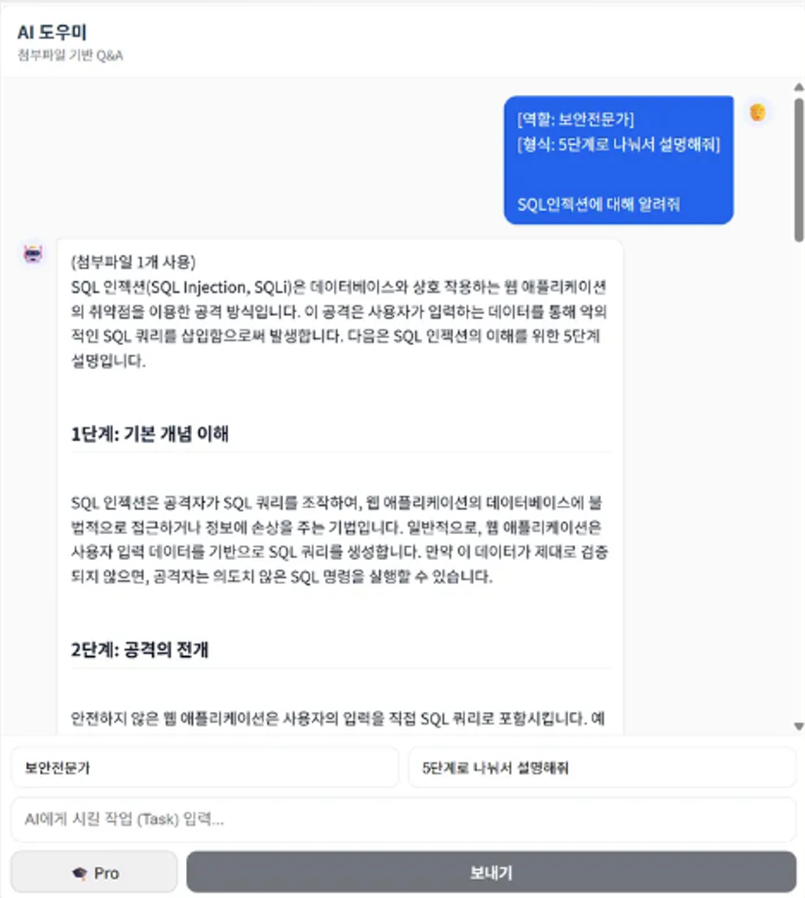
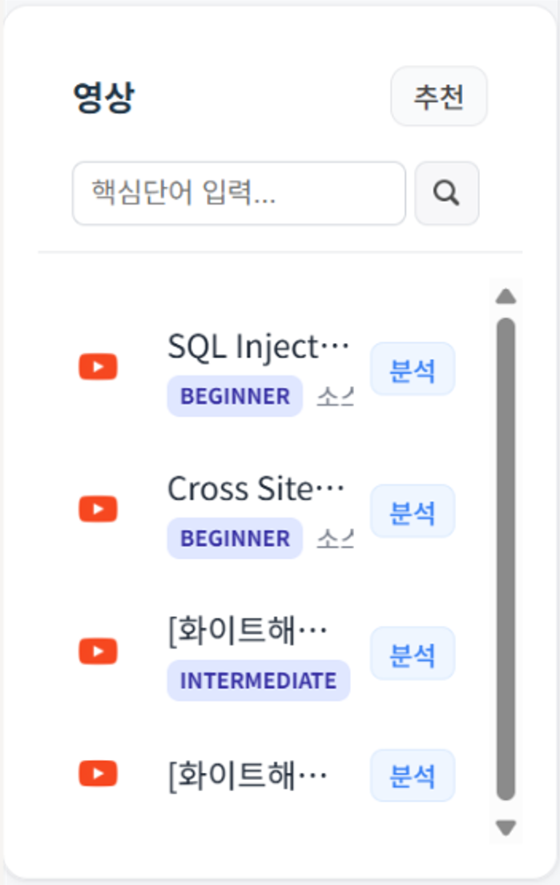
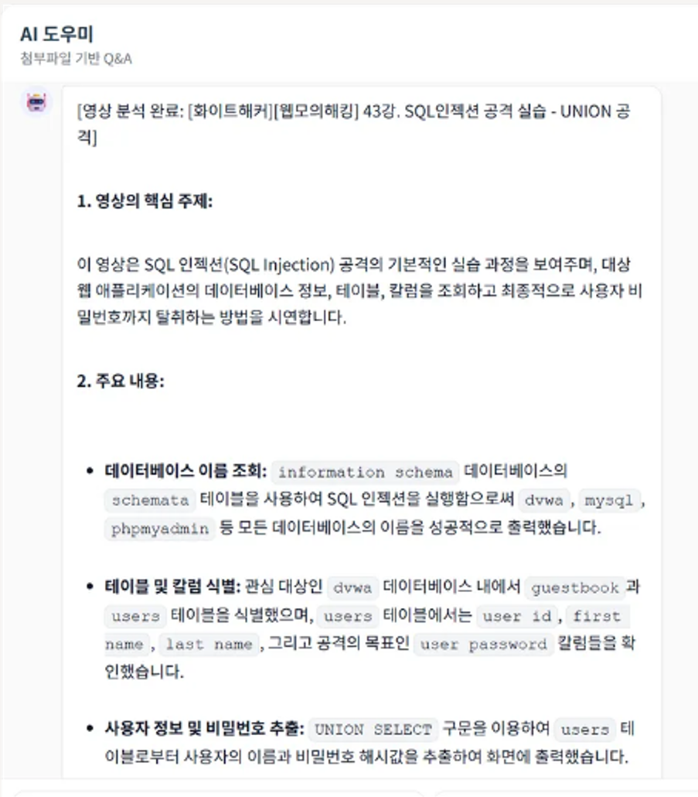
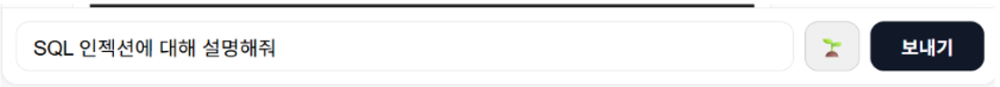
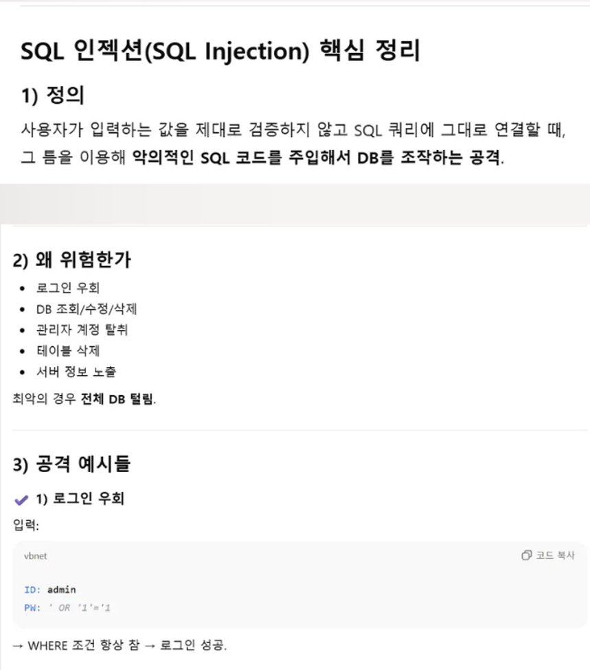
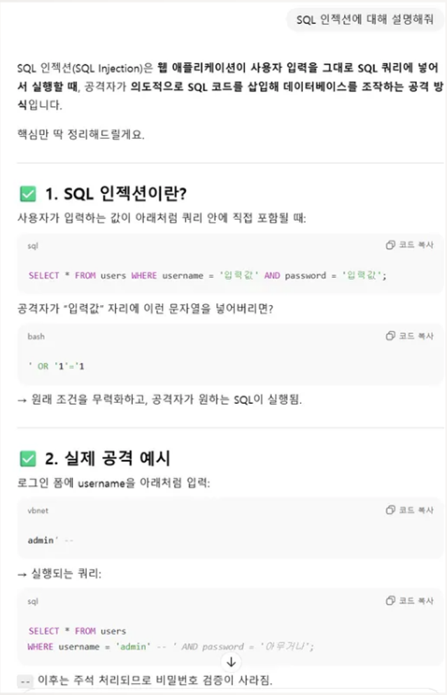
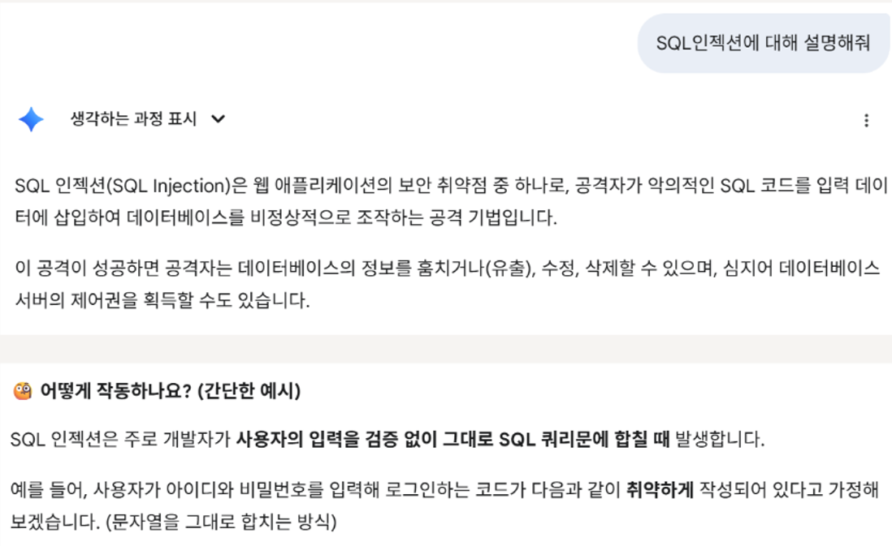
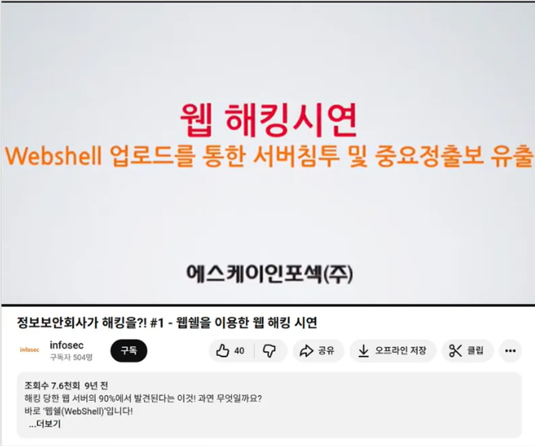

프로젝트: AI 노트필기
AI와 함께 공부하는 학습자를 위한 차세대 노트필기 및 학습 보조 서비스
프로젝트 개요
- 기 간: 2025/11/01 ~ 2025/11/17
- 목 표: 각 AI의 장단점을 활용한 최적의 학습 UI/UX 제공
사용 기술
문제 정의: 기존 학습 도구의 한계
❌ 수많은 채팅방 속에서 이전 학습 내용 찾기의 어려움
❌ 효과적인 AI 응답을 위해 매번 긴 페르소나와 컨텍스트를 입력해야 하는 번거로움
❌ NotebookLM 등 기존 도구의 불완전한 자료(이미지, 짧은 텍스트) 인식 문제
❌ 학습 내용과 관련된 영상을 일일이 검색해야 하는 비효율성
핵심 기능
1. GPT 프롬프트 모드
긴 프롬프트를 반복 입력하는 불편함을 줄이고자, 간단한 채팅 '새싹 모드'와 구조화된 입력의 '프로 모드'를 구현했습니다.
2. Gemini 영상 추천
자료의 맥락을 파악하여 학습 영상을 추천합니다. 영상의 최신성과 키워드 분석이 뛰어난 Gemini를 사용해 추천 정확도를 높였습니다.
3. 고품질 영상 분석
YouTube 링크를 입력하면 Whisper AI가 음성을 텍스트로 변환하고, GPT가 이를 요약/분석합니다. NotebookLM을 벤치마킹하여 구현했습니다.
UI/UX 개선 과정
사용자 입력을 위한 두 가지 모드 UI
효과적인 AI 응답을 유도하기 위해, 간단한 채팅 형식의 '새싹 모드'와 체계적인 정보 입력이 가능한 '프로 모드' 두 가지 UI를 구현했습니다.
새싹 모드 UI
프로 모드 UI

프롬프트 개선 전후 비교
단순 텍스트 입력과 구조화된 프롬프트(Role, Context)를 적용했을 때 응답 품질을 비교했습니다. 프로 모드에서 답변의 구조적 완성도가 크게 향상됨을 확인했습니다.
기본 프롬프트 결과
프로 모드 적용 결과

AI 모델 성능 비교 분석
자료 해석 및 설명 능력 (GPT vs Gemini)
Gemini는 텍스트 위주로 나열하는 반면, GPT는 Markdown 문법을 활용해 중요 부분을 볼드체로 강조하고 구조화하여 가독성이 훨씬 뛰어났습니다.
GPT 자료 설명 (최종 채택 ✅)
Gemini 자료 설명
영상 추천 성능 비교 (GPT vs Gemini)
GPT는 최신 영상 데이터 부재로 존재하지 않는 영상을 추천(환각 현상)했으나, Gemini는 최신 YouTube DB와 연동되어 정확한 실존 영상을 추천했습니다.
GPT 영상 추천 (환각 발생)
Gemini 영상 추천 (최종 채택 ✅)

프로젝트 데모
AI 노트필기 시연 영상
배운 점
"단순히 API를 연결하는 것을 넘어, 각 AI 모델(GPT, Gemini)의 특성을 분석하고 적재적소에 배치하는 'AI 오케스트레이션'의 중요성을 배웠습니다. 사용자 경험(UX)을 최우선으로 고려하여 기술적 의사결정을 내리는 과정에서 개발자로서 한 단계 성장할 수 있었습니다."